Um den Ausprägungspool nutzen zu können müssen folgende Voraussetzungen erfüllt werden:
ü der zu produzierende Artikel muss mit Ident- bzw. Chargennummer geführt werden
ü mindestens eine der hinterlegten Stücklistenkomponente muss mit Ident- oder Chargennummer geführt werden
ü innerhalb der Stückliste muss im Register "Zusatz" die Option "Mehrfachausprägungen" aktiviert sein
ü innerhalb der Stückliste muss im Register "Zusatz" die Option "Ausprägungspool" aktiviert sein
ü innerhalb der Stückliste muss im Register "Zusatz" unter dem Bereich "Ausprägungspool" das Feld "Artikelnummer" oder "Poolnummernvorschlag" gefüllt sein
Produktionsartikel
Im Artikelstamm, welcher über den Menüpunkt
1 WinLine FAKT
1 Stammdaten
1 Artikelstamm
1 Artikel
aufgerufen wird, kann kontrolliert werden, ob es sich bei dem Produktionsartikel um einen Ident- bzw. Chargenartikel handelt.
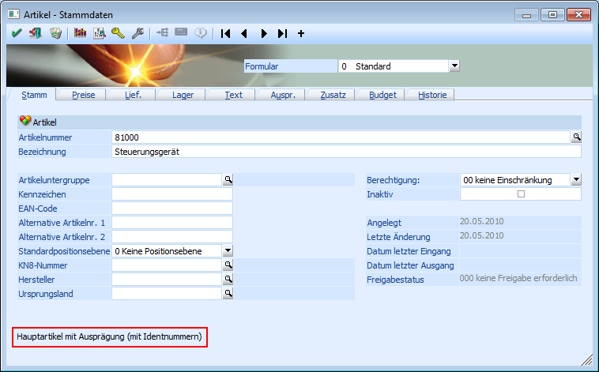
Der Artikeltyp ist in dem Register "Lager" ersichtlich und muss auf "Produktionsartikel" stehen.
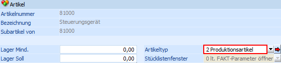
Stücklistenkomponenten
Im Artikelstamm, welcher über den Menüpunkt
1 WinLine FAKT
1 Stammdaten
1 Artikelstamm
1 Artikel
aufgerufen wird, kann kontrolliert werden, ob es sich bei den in der Stückliste hinterlegten Komponenten um Artikel handelt, welche mit einer Ident- bzw. Chargennummer geführt werden.
Der Artikeltyp der Komponente ist in dem Register "Lager" ersichtlich. Ob es sich dabei um einen "Hauptartikel" oder einen "Produktionsartikel" handelt ist unrelevant.
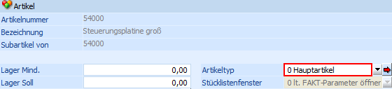
Stückliste
In der Stückliste des Produktionsartikels, welche über den Menüpunkt
1 WinLine PPS
1 Stammdaten
1 Stückliste
aufgerufen wird, werden die Komponenten (mit und ohne Ident- bzw. Chargenführung) und die Tätigkeiten in der Stücklistentabelle hinterlegt.
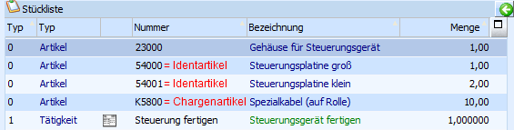
Im Register "Zusatz" müssen die Optionen "Mehrfachausprägungen" und "Ausprägungspool" aktiviert werden.
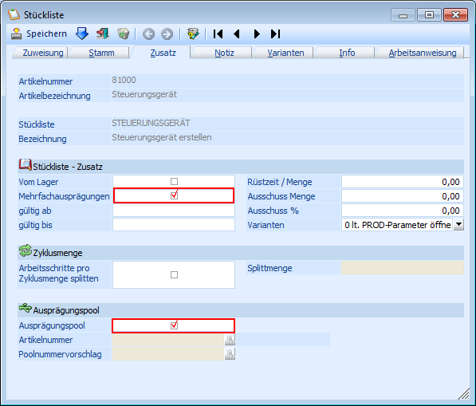
Wie sich die Poolnummer bildet wird über die Felder "Artikelnummer" bzw. "Poolnummernvorschlag" gesteuert.
Ø Artikelnummer
An dieser Stelle kann die Artikelnummer eines Ident- bzw. Chargenartikels hinterlegt werden. Dieses ist in der Regel die Nummer des zu produzierenden Artikels.
Für die Erzeugung der Poolnummer wird die letzte Ident- bzw. Chargennummer des hinterlegten Artikels genommen und um die benötigte Anzahl von Pools hochgezählt. Somit sollte die Ausprägungspoolnummer der am Ende erzeugten Ident- bzw. Chargennummer entsprechen.
Hinweis
Damit die Poolnummer gebildet werden kann muss bei dem hinterlegten Ident- bzw. Chargenartikel bereits eine Ident- bzw. Chargennummer vorhanden sein!
Beispiel
Es sollen 5 Steuerungsgeräte hergestellt werden. Innerhalb der Stückliste des Steuerungsgerätes (Identnummernartikel) wird in dem Feld "Artikelnummer" (Bereich "Ausprägungspool") die Artikelnummer des Steuerungsgerätes hinterlegt.
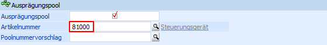
Bei dem Steuerungsgerät ist bereits eine Identnummer mit der Nummer "50001" vorhanden.
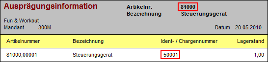
Bei der Produktionsauftragsanlage werden die Poolnummern, beginnend mit der Nummer "50002", aufsteigend gebildet.
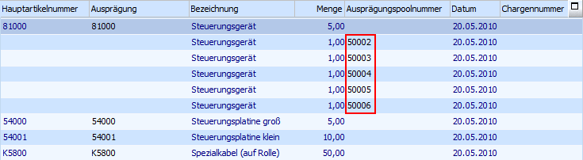
Wenn der Produktionsartikel "81000" ausgeprägt wird, dann werden die Identnummern nach der gleichen Logik vorgeschlagen, wie die Poolnummernbildung (letzte Identnummer + 1). Wird an diesem Vorschlag keine Änderung vorgenommen, dann würde jede erzeugte Identnummer der Ausprägungspoolnummern entsprechen.
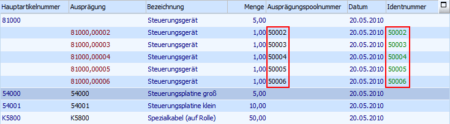
Ø Poolnummernvorschlag
An dieser Stelle kann eine frei zu definierende alphanumerische Hinterlegung getroffen werden.
Für die Erzeugung der Poolnummer wird dieser Eintrag genommen und um die benötigte Anzahl von Pools hochgezählt.
Hinweis
Der hinterlegte Poolvorschlag bleibt immer die Ausgangsbasis für die Erzeugung der Poolnummern und wird an dieser Stelle nicht hochgezählt. D.h. wurde die Hinterlegung "POOL-00000" getroffen, dann wäre die erste Poolnummer für alle weiteren Produktionsaufträge immer die "POOL-00001".
Beispiel
Es sollen 5 Steuerungsgeräte hergestellt werden. Innerhalb der Stückliste des Steuerungsgerätes (Identnummernartikel) wird in dem Feld "Poolnummernvorschlag" (Bereich "Ausprägungspool") die Hinterlegung "POOL-00000" getroffen.
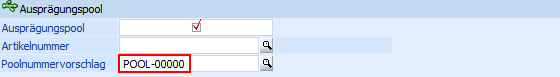
Bei der Produktionsauftragsanlage werden die Poolnummern, beginnend mit der Nummer "POOL-00001", aufsteigend gebildet.
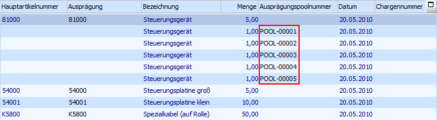